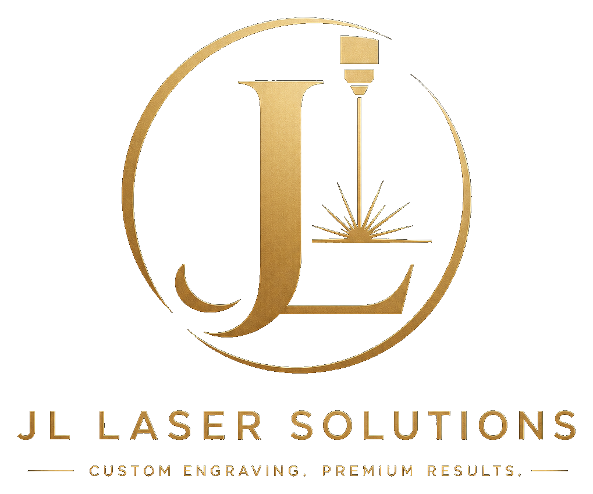
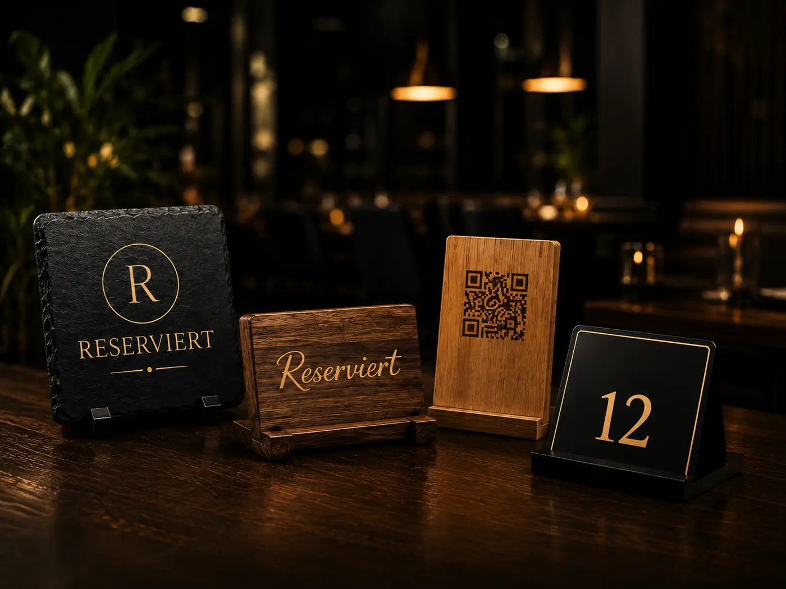
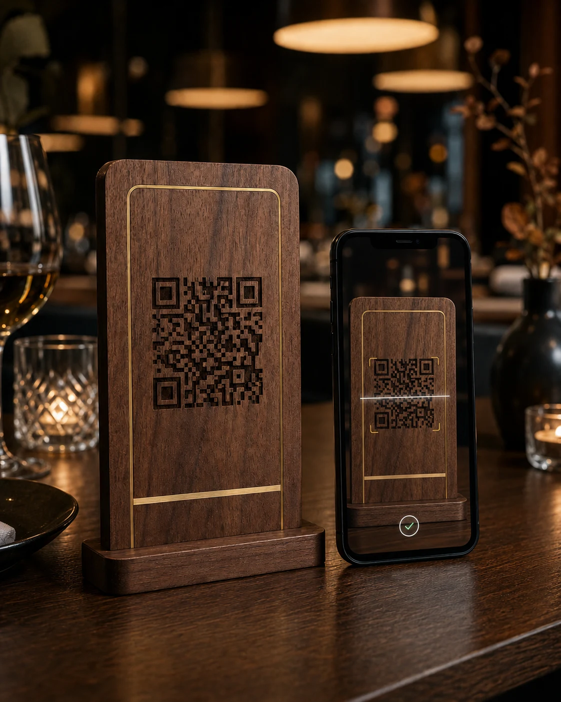
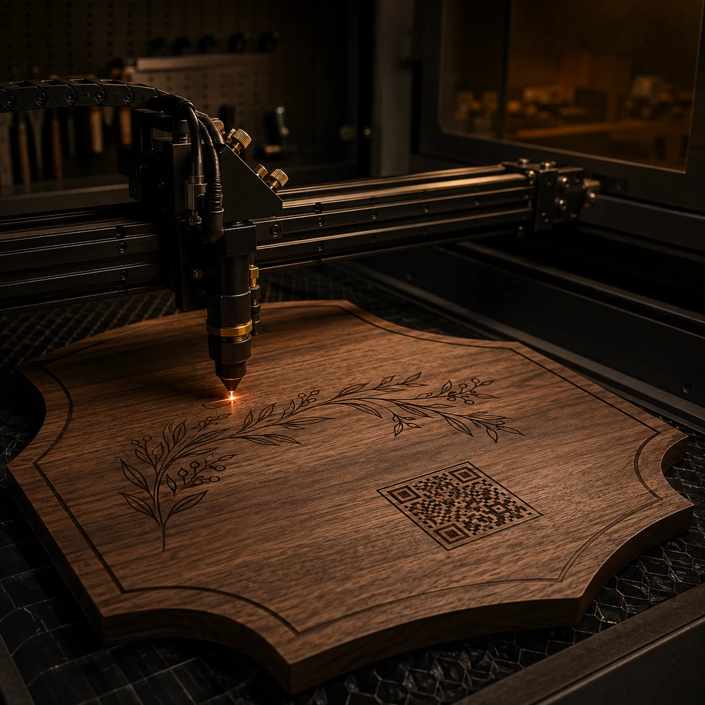

Gia công chính xác
Độ chính xác đến từng milimet với công nghệ laser hiện đại.

Đăng nhập Gửi yêu cầuKHẮC LASER & GIẢI PHÁP SỐ · BERLIN
Từ sản phẩm khắc laser theo yêu cầu đến nhà hàng số: chúng tôi kết hợp trang bị kinh doanh cao cấp với Smart QR và Growth AI, kết nối hình ảnh của bạn tại cửa hàng và trên mạng.

Độ chính xác đến từng milimet với công nghệ laser hiện đại.
Vật liệu được tuyển chọn để bảo đảm độ bền lâu dài.
Giải pháp được thiết kế phù hợp với thương hiệu của bạn.
Đồng hành trực tiếp từ ý tưởng đến sản phẩm hoàn thiện.
Trao đổi nhanh chóng và sản xuất trực tiếp tại Berlin.
DỊCH VỤ CỦA CHÚNG TÔI
Dành cho nhà hàng, khách sạn, cửa hàng bán lẻ và doanh nghiệp – chúng tôi tạo ra những sản phẩm cao cấp, độc đáo giúp thương hiệu của bạn nổi bật.
Biển đặt bàn, bảng để bàn, menu, số phòng và các sản phẩm trang trí thiết kế riêng.
Khắc chất lượng cao trên đá phiến, gỗ và nhiều vật liệu khác để tạo hình ảnh chuyên nghiệp.
Ý tưởng quà tặng độc đáo và sản phẩm cá nhân hóa cho những dịp đặc biệt.
Bảng QR cao cấp kết nối thương hiệu trực tiếp với menu, đánh giá và nội dung số.
Chi tiết trang trí thiết kế riêng cho không gian tinh tế và ấn tượng lâu dài.
Nội dung, lịch và dữ liệu mạng xã hội hiện có trong không gian làm việc có AI hỗ trợ cho nhà hàng.
BƯỚC TIẾP CÙNG CÔNG NGHỆ SỐ
Hình ảnh chuyên nghiệp không chỉ dừng ở bàn ăn. Khám phá thực đơn số, tiếp thị có AI hỗ trợ và những bước phát triển phù hợp với nhà hàng.
01 / SMART QR
Bảng mã QR cao cấp dẫn khách trực tiếp đến trang nhà hàng. Thực đơn, món gợi ý và thông tin liên hệ được quản lý tập trung; khách xem ngay trên trình duyệt.

Tự tải lên và thay thế thực đơn PDF cùng logo nhà hàng.
Điều chỉnh mẫu, màu sắc, phông chữ và ảnh bìa theo thương hiệu.
Làm nổi bật một món ăn ngay trên trang nhà hàng.
Tải mã QR định dạng SVG để in và dùng trên các vật liệu khác.
Kiểm duyệt bài viết, hình ảnh và bình luận của khách trong khu vực riêng.
Theo dõi lượt truy cập và diễn biến theo thời gian trong bảng điều khiển.
Giờ mở cửa, thông tin liên hệ, liên kết mạng xã hội và đường dẫn đánh giá Google hoàn thiện trang nhà hàng. Bạn quản lý nội dung và thiết kế bằng tài khoản khách hàng riêng.
02 / GROWTH AI
Growth AI tập hợp ý tưởng, nội dung và dữ liệu mạng xã hội hiện có trong một không gian làm việc. AI sử dụng kiến thức về nhà hàng, từ câu hỏi đầu tiên đến bản nháp bài đăng.
“Chuẩn bị nội dung cho thực đơn tuần mới.”
Trao đổi ý tưởng, sử dụng tệp đính kèm và phát triển bản nháp qua trò chuyện.
Chuẩn bị và chỉnh sửa văn bản, hình ảnh và video trong khu vực media.
Sắp xếp bản nháp, media và lịch đăng tại một nơi.
Xem số liệu có sẵn từ tài khoản đã kết nối, kèm khoảng thời gian và lần cập nhật.
Xem tin nhắn Instagram, đánh giá Google đã được tải về và soạn câu trả lời.
Cập nhật giọng điệu thương hiệu, mục tiêu, thực đơn và thông tin đã xác nhận cho AI.
Lập chiến dịch, tìm cơ hội từ tín hiệu hiện có và tổng hợp báo cáo tuần. Kiểm tra đề xuất kiến thức và gửi phản hồi trong trung tâm học tập. Một trưởng nhóm AI có thể đặt tên và năm vai trò chuyên môn hỗ trợ công việc.
Chức năng mạng xã hội cần tài khoản được thiết lập và quyền phù hợp từ nhà cung cấp. Bài đã lên lịch có thể được chuyển tự động cho tài khoản và định dạng được hỗ trợ khi thiết lập hoạt động và nội dung đầy đủ. Việc gửi câu trả lời ra bên ngoài cần được cấp quyền riêng.
03 / ReceptionAI Đang phát triển
Chúng tôi đang phát triển khu vực riêng cho đặt bàn và sức chứa. Quản lý bàn và kiểm tra chỗ trống đã có nền tảng; điện thoại và trợ lý AI cần được thiết lập riêng và tiếp tục phát triển.
Trao đổi về thử nghiệmPHÙ HỢP VỚI NHÀ HÀNG CỦA BẠN
Cùng xác định Smart QR, Growth AI hay sự kết hợp phù hợp với công việc hằng ngày.
Cấu hình thông tin nhà hàng, thực đơn và các tài khoản mong muốn.
Quản lý nội dung bằng tài khoản riêng và cùng chúng tôi phát triển hình ảnh nhà hàng.
Không. Sau khi quét mã, trang Smart QR mở ngay trên trình duyệt. Chat trên website này cũng không cần tài khoản WhatsApp.
Có. Tài khoản khách hàng cho phép quản lý các khu vực đã được kích hoạt cho nhà hàng, chẳng hạn thực đơn, thiết kế và bản nháp tiếp thị.
Phạm vi phụ thuộc vào tài khoản đã kết nối, quyền từ nền tảng và thiết lập. Trước khi bắt đầu, chúng tôi thống nhất những số liệu, định dạng và chức năng đăng bài mà nhà hàng có thể sử dụng.
DÀNH CHO NHÀ HÀNG & KHÁCH SẠN
Từ ấn tượng đầu tiên trên bàn đến menu điện tử, chúng tôi kết hợp vật liệu cao cấp, khắc chính xác và thiết kế phù hợp với không gian của bạn.

VÌ SAO CHỌN JL LASER & CUT SOLUTIONS?
Chúng tôi kết hợp công nghệ laser hiện đại, vật liệu cao cấp và gia công tỉ mỉ để tạo giải pháp riêng cho doanh nghiệp.
✓ Gia công chính xác, thành phẩm sắc nét
✓ Tư vấn trực tiếp và giải pháp thiết kế riêng
✓ Vật liệu cao cấp và gia công tỉ mỉ
✓ Trao đổi trực tiếp, tận tâm
✓ Sản xuất tại Berlin
QUY TRÌNH ĐƠN GIẢN
Gửi cho chúng tôi ý tưởng, kích thước, logo hoặc mẫu thiết kế.
Cùng thống nhất vật liệu, thiết kế và phương án thực hiện.
Bạn nhận bản thiết kế để kiểm tra và phê duyệt.
Chúng tôi sản xuất chính xác và chú trọng từng chi tiết.
Nhận tại Berlin hoặc giao hàng theo thỏa thuận.
LIÊN HỆ
Dù là một sản phẩm riêng lẻ hay trang bị cho cả không gian, hãy chia sẻ dự án với chúng tôi. Bạn sẽ được tư vấn trực tiếp và hoàn toàn không ràng buộc.
Bạn cần tư vấn? Nhắn qua bong bóng chat với tên và email, không cần WhatsApp.
ĐỊA CHỈDong Xuan Center
Herzbergstraße 128
Halle 1, Raum 113
10365 Berlin
CHỦ DOANH NGHIỆPJony Ngo
ĐIỆN THOẠI / WHATSAPP+49 152 33953121
E-MAILjonyngo@jlsolutions.info
Yêu cầu báo giá